We now want to describe geometrically the combined effect of the temporal and spatial control perturbations on the terminal state. The vector
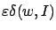
describes the infinitesimal (first-order in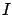
. (It corresponds to the vector labeled as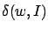
, it is clear that its direction depends only on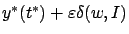
for various values of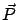
denote the union of the raysLet us now ask ourselves the following question: is there a spatial control perturbation such that the corresponding first-order perturbation of the terminal point is, say,
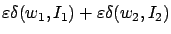
for some control values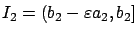
? We will now see that the right way to ``add" two needle perturbations is to concatenate them, i.e., to perturb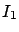
(by setting it equal to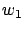
there) and on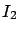
(by setting it equal to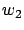
). Here we are assuming that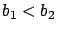
, so that for
The resulting first-order perturbation of the terminal point will then be the sum . This is true simply because the variational equation, which propagates first-order state perturbations up to the terminal time, is linear. Indeed, according to the formulas derived in the two previous subsections, we will have
at the end of the first perturbation interval, then
at the end of the second perturbation interval, and finally, since
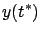 |
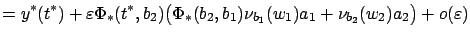 |
|
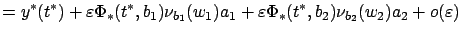 |
||
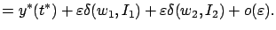 |
More generally, if we want to generate the infinitesimal perturbation
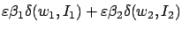
for some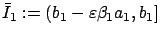
and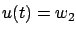
on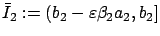
. It is also clear that this construction immediately extends to linear combinations (with positive coefficients) of more than two terms.
Recall that
is the cone with vertex at  formed by the rays
formed by the rays
 corresponding to all simple (individual) needle perturbations. The preceding discussion demonstrates that by concatenating different needle perturbations, we generate a larger cone
(with the same vertex) which consists exactly of convex combinations of points in
. We denote this convex cone by
co
corresponding to all simple (individual) needle perturbations. The preceding discussion demonstrates that by concatenating different needle perturbations, we generate a larger cone
(with the same vertex) which consists exactly of convex combinations of points in
. We denote this convex cone by
co .
.
In Section 4.2.2 we also constructed the line  of perturbation directions
arising from the temporal perturbations of
of perturbation directions
arising from the temporal perturbations of  . We now add this line to
the
convex cone
co
. We now add this line to
the
convex cone
co , in the sense of adding vectors attached to the point
, in the sense of adding vectors attached to the point  . More precisely, we consider the set of points of the form
. More precisely, we consider the set of points of the form
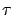
,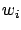
and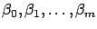
are arbitrary nonnegative numbers. We denote this set by
By the same reasoning as before, we can show that for every point
 given by (4.25)
there exists a perturbation of
given by (4.25)
there exists a perturbation of  such that the terminal point of the
perturbed trajectory satisfies
such that the terminal point of the
perturbed trajectory satisfies
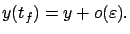
To obtain the desired control perturbation, we need to apply a concatenated spatial perturbation as explained above, followed by the temporal perturbation that adjusts the terminal time by